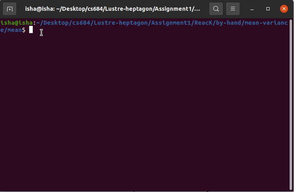

Welcome to CS684: Embedded Systems Labs!
Instructors: Prof. Kavi Arya and Prof. Paritosh Pandya
Course Details:
|
TAs:
Lab Staff:
|
Course Outline:
| Theory: | Practical: |
|---|---|
|
Labs
|
Grading Policy:[Tentative]
- Quizzes : 5%
- Assignments: 20%
- Labs : 20%
- Project : 25%
- Midsem : 20%
- Endsem : 10%
Lecture Schedule:[Tentative]
| Date | Lecture Topic | Quiz | Lecture Slides |
|---|---|---|---|
| Jan 05 | Course Prelude, Introduction | - | Intro |
| Jan 09 | NRE Cost and Software Engineering Issues | - | Diversity & Cost |
| Jan 12 | Embedded Systems Applications (Digital Camera) | - | Applications of ES |
| Jan 16 | Embedded Systems Applications (Digital Camera) | - | FSM |
| Jan 19 | Model Based Design (Intro + FSM) | - | Statecharts |
| Jan 23 | Reactive Kernel | - | Cyber Physical Systems |
| Jan 30 | Model-Based Design (LUSTRE) | - | Synchronous Dataflow Programming |
| Feb 02 | Model-Based Design (LUSTRE) | - | Array, Map, Fold |
| Feb 06 | Model-Based Design (LUSTRE) | - | Uni-Mode & Multi-Mode Controllers |
| Feb 09 | Model-Based Design (LUSTRE) | Quiz 2 | No Slides |
| Feb 13 | Model-Based Design (LUSTRE) | - | Multi-Mode Controllers |
| Feb 16 | Model-Based Design (LUSTRE) | - | Finite-State Automata |
| Feb 20 | Model-Based Design (LUSTRE) | - | |
| Feb 23 - March2nd | midsem | - | |
| March 05 | White Line Following - PID Control | - | |
| March 12 - 15 | Project presentation | - | |
| March 19 | Introduction to Realtime Systems | - | |
| March 22 | Scheduling Theory | - | |
| March 26 | Scheduling Theory | Quiz 3 | |
| April 02 - 5 | Project Presentations (mid) | - | |
| April 12 | Project Doubt clearing | - | |
| April 16 - 19 | Project Presentations (end) | - | |
| April 22 - May 2 | Endsem | - |
Additional Module: Introduction to Firebird V Robot
Module 1: I/O Interfacing
- Understand the function of I/O ports and the associated registers.
- Interface I/O peripherals like Switch, Buzzer and Bar graph LEDs.
Module 2: Masking
- Understand the concept of Masking with the help of I/O interfacing.
- Need of using AND and OR operators with the help of few examples.
Additional Module: LCD Interfacing
Module 3: Motor Interfacing
- Direction control of DC motors present on Firebird V Robot.
- Understanding the use of L293D motor driver IC.
Module 4: Pulse Width Modulation
- Understanding Timers and associated registers.
- Speed control of the robot and brightness control of the LED.
The installation of all software/libraries has been tested on Ubuntu 16.04, 18.04 and 22.04. We recommend you to use one of these versions of Ubuntu OS. These software have to be installed ONLY ON 64-bit OS.
Refer the Video for installing Ubuntu on Virtual Machine
QFSM:
-
Qfsm is a graphical editor for finite state machines.
-
Download the App Image of QFSM from this page.
-
Copy the AppImage to preferred directory (Eg- Desktop)
-
Open Terminal Window in the directory containing the AppImage and Execute the following command-
chmod +777 Qfsm-x86_64.AppImage -
Now you can launch QFSM by clicking on the QFSM AppImage Icon through FileExplorer
If you are unable to open the App Image, Install the FUSE dependencies from here
Lustre/Heptagon:
Lustre v4 Installation
- Please download the appropriate distribution of Lustre V4 from here.
NOTE: For Ubuntu 20, you can use
lustre-v4-III-dc-linux64.tgzfrom this link
-
Once you download the distribution, extract the folder and make sure to copy the folder in following directory using command given below:
sudo cp -R lustre-v4-IV.2023.293-linux64 /usr/local/ -
Now after unzipping and copying the tarball file, installation will be completed by setting up two environment variables.
-
You can go through the instructions provided in this README.
-
Or follow the following steps:
-
Add
Lustre V4to your shell's configuration, considering that your shell type isBashenter the below lines in~/.bashrcfile as below. First open the.bashrcfile in any editor like Nano, Gedit, etc.
export LUSTRE_INSTALL=/usr/local/lustre-v4-IV.2023.293-linux64 source $LUSTRE_INSTALL/setenv.sh- After configuring Lustre in your shell, run the following command to source the configuration.
source ~/.bashrc -
-
That was alll for
Lustre V4installation.
Heptagon Installation
-
First step is to install opam which is a source-based package manager for OCaml. It supports multiple simultaneous compiler installations, flexible package constraints, and a Git-friendly development workflow.
-
To install opam run the following command in your terminal.
sh <(curl -sL https://raw.githubusercontent.com/ocaml/opam/master/shell/install.sh) -
Next we will have to install some prerequisite libraries, to install same run the below command in your terminal.
sudo apt-get install -y m4 make wget patch unzip bubblewrap git g++If you cannot find Bubblewrap (ISSUE on 16.04), install it from http://ftp.ubuntu.com/ubuntu/pool/universe/b/bubblewrap/ and then continue with the rest of the steps.
-
After this we need to install Heptagon and it's dependencies. To do the same run the following commands:
NOTE: You have to execute all these commands in the same terminal session.
```
opam init
````
- After running the above command it should automatically source `~/.bash_profile` or `~/.profile` by defualt. If it doesn't you need to source either of the file manually. It will be specified in the text you get after running opam init.
```
eval $(opam env)
```
```
opam switch create 4.03.0
```
```
eval $(opam env)
```
- Install few more libraries using following commands:
```
sudo apt-get install libgtk2.0-dev
```
```
opam install menhir lablgtk ocamlgraph ocamlbuild camlp4
```
-
Next we need to download
Hetpagonand unzip it. -
After unzipping the folder, run the following commands in your terminal:
cd </path/to/where/you/unzipped>/heptagon-1.05.00/./configure && makesudo make install -
You have Heptagon installed in your system. You should have “heptc” and “hepts” binaries linked to your path. You can verify that by autocompleting on “heptc” or “hepts” or by typing it on the terminal.
Note: The simulator “hepts” depends on “sim2chro” so you must have Lustre v4 installed to be able to use it.
Testing
-
Now to test installation follow the steps given below.
-
Download the following files:
simulate.shis utility script for simulating Heptagon nodes. -
After downloading above files make sure to run following in the directory where you have downloaded
simulate.sh.
chmod u+x simulate.sh- After everything is in place let's simulate our heptagon node. To do same we need to execute
simulate.shwith name of the node and path to heptagon file.
./simulate.sh -s <name-of-node> -p </path/to/heptagon/code.ept>Example:
./simulate.sh -s minsquare -p try1.ept- Optionally you can put this script in your path and use it from anywhere. At the end of your ~/.bashrc or ~/.bash_profile, add following.
export PATH="$PATH:/home/erts/Course/Test/"-
where simulate.sh is contained in /home/erts/Course/Test directory
-
Finally run the following command to simulate our heptagon node.
Example:
simulate.sh -s minsquare -p try1.ept -
Troubleshooting
- If you are facing issues with executing heptagon node, first check whether the below two lines are present inside the bashrc, if not then manually add the lines to bashrc.
export LUSTRE_INSTALL=/usr/local/lustre-v4-IV.2023.293-linux64 source $LUSTRE_INSTALL/setenv.sh
Heptagon Patch for Reset
-
There were two initialization related bugs in the reset phase after state machine.
-
Please replace the file in the folder
heptagon-1.05.00/compiler/heptagon/trasnformation/reset.mlwith the attached reset.ml file. -
Once done, recompile the heptagon by following running following commands inside
heptagon-1.05.00directory:./configure && makesudo make install
Type Conversion in Heptagon
To use type conversion in heptagon, follow the following steps:
-
Copy paste the following files inside the working directory, where you have your .ept file.
-
In your .ept,
- Include mc_ext by using:
open Mc_ext - For int to float conversion use:
float_of_int(val) - For float to int conversion use:
int_of_float(val)
- Include mc_ext by using:
-
Use the updated simulate.sh to run the heptagon code.
For reference, example is provided here: type_convesion.tar.gz Download the file. Extract it and run the following command:
./simulate.sh -s main -p type_conversion.ept
CS684: Embedded System Course
Labs
- Software
- Qfsm, Lustre/Heptagon
- Basic Peripherals:
- Introduction to AVR Controller
- GPIO, Motor Interfacing, PWM and ADC
- Adaptive Cruise Control - case study
- using Embedded C programming
- using LUSTRE
Lab Deatils:
- Lab 0: Installation of Software
- Lab 1: Draw FSM for the Line Following Robot
- Upcoming...
CS684: Embedded System Course
Lab 1: Draw FSM for Line Following
LEARNING RESOURCES
-
Tool to be used: Qfsm
-
Tutorial for Qfsm: Qfsm User Manual
-
Getting started for Lab-1: Finite state machine - Line tracker
AIM
-
You have to build a FSM for Line Following. You are allowed to go for Moore or Mealy Machine.
-
Objective is to move the robot from Start (S) to End (E) location. [Refer following diagram]

Note: The above image only gives an abstraction of some random path. It is just for reference. It will help you to build different states accurately.
Hint: According to given path, whenever robot encounters an intersection, it should take a respective turn which will lead the robot to End location. (This assumption helps to reduce the number of states in FSM)
- Inputs for the FSM: 5 White Line Sensors.
- Outputs for the FSM: 2 for controlling the motion of the Robot based on its direction.
- Inputs should be taken as binary values while building the FSM in Qfsm.
- There can be N number of WLF Readings combinations that one can get.
- The following table shows few such cases:
| WLF Readings | Images |
|---|---|
| 11111 |  |
| 00100 |  |
| 00010 |  |
| 01000 |  |
| 11100 |  |
- Outputs:
- Both outputs are used for Direction of robot.
- Representation of bits for output:
0 for stop, 1 for forward and -1 for backward.
Here we are talking about a particular wheel.
- Following table shows the combination of both the wheels on Robot movement:
| Output Combinations | Action |
|---|---|
| 0, 0 | Stop |
| 1, 1 | Forward |
| -1, -1 | Backward |
| 0, 1 | Left adjust by 10 deg with Forward |
| 1, 0 | Right adjust by 10 deg with Forward |
| 0, -1 | Left adjust by 10 deg with Backward |
| -1, 0 | Right adjust by 10 deg with Backward |
| -1, 1 | Sharp Left by 10 deg |
| 1, -1 | Sharp Right by 10 deg |
- Consider the following scenario in which the robot is attempting to align itself by adjusting in the correct direction. This is how the robot will move for two consecutive 10 output combinations.

- Using the above information, draw FSM for Line following of the robot along with states added for describing the stratergy to move the robot from S to E locations.
You are free to make assumptions regarding readings of white line sensors at different instances, distance covered by robot for different motions in single step, distances regarding the paths given in the arena image.
Submission Instructions
- For Lab-1 submission you have to upload a
.tar.gzfile. - Folder should contain following:
.fsmfile: source file of QFSM.docfile:
- Containing information about the startergy used, assumptions made and description about the FSM, inputs used for simulation and outputs obtained in a tabular form.
- Also add youtube link of the video - shoot the screen recording of the simulation of FSM in QFSM for atleast 20 steps with different input combinations.
- Compress the folder and rename it as
<RollNo>_Lab_1.tar.gz - Upload the file on Moodle
Note: Make sure
- that
.fsmfile is simulatable on Qfsm - to add RollNo in your file name
- that
CS684: Embedded System Course
Lab 2: Heptagon code for Line following
AIM
-
You have to write a heptagon code for Line Following.
-
Inputs:
- Values from 5 White Line Sensors.
- Each Sensor value ranges between: 0 to 1023.
- On white surface, sensor values are low and for black surface, sensor values are high.
-
Outputs:
- 3 for controlling the motion of the Robot (1 for Direction and 2 for Motor's velocities).
- From the final heptagon node, 3 outputs are required: 2 velocity values (of left and right motors) and direction.
- Directions list:
| Direction | Representation |
|---|---|
| Stop | 0 |
| Forward | 1 |
| Left | 2 |
| Right | 3 |
| Backward | 4 |
-
Motor velocity ranges between 0 to 100. It should not be negative or greater than 100.
-
The heptagon node for line following must be defined according to the format given:
node main(sen0, sen1, sen2, sen3, sen4: int) returns (v_l, v_r, dir: int)
var sen: int^5;
let
sen = [sen0, sen1, sen2, sen3, sen4];
tel
- Using the above information, write a heptagon for Line following of the robot. Consider a black line on white surface.
- Use PID controller for line following.
You are free to make assumptions regarding readings of white line sensors at different instances, distance covered by robot for different motions in single step etc.
Algorithm
- White Line following has to be done using the 5 white line sensors provided.
- Each sensor value ranges between: 0 to 1023.
- On white surface, sensor values are low and for black surface, sensor values are high.
- So depending upon the value of the particular sensor, robot has to decide whether it is on the black line or it is deviated from the line.
- To adjust the position of the robot if it deviated from the black line, use PID. The same cases as given in Lab 1 (FSM) applies here as well but rather than binary values, now you have to consider values between 0 to 1023.
- Likewise, team has to assume different scenarios or test cases which may come across while robot is traversing the arena.
- You are free to make assumptions regarding readings of sensors at different instances.
Algorithms for Line Following
1. Bang-bang Controller
Here all the sensor values are converted to binary using thresholding and will be directly used to control the speed and direction of the motors. It uses an if-else ladder structure for logic implementation. The controller that was developed in Lab 1 uses the same logic. This method is not reliable as numerous cases must be defined for a set of sensor values which will be difficult to implement.
2. PID Controller with binary sensor values
PID controller is a feedback loop that utilises the error in the sensor values to correct the position of the robot. Here all the sensor values are converted to binary using thresholding and error value is calculated. This error value is used for controlling the spees and direction of the motor.
3. PID Controller with direct sensor values
This is similar to method 2 but here no thresholding is used for sensor values while calculating error. The error calculation can be done using various methods like weighted average or using the sensor values as such.
How does PID work?
The system calculates the ‘error’, or ‘deviation’ of the physical quantity from the set point, by measuring the current value of that physical quantity using a sensor(s). To get back to the set point, this ‘error’ should be minimized, and should ideally be made equal to zero. Also, this process should happen as quickly as possible. Ideally, there should be zero lag in the response of the system to the change in its set point.
More information can be found in many books and websites, including here:
http://en.wikipedia.org/wiki/PID_controller
Implementing PID
(i) Error Term (e):
This is equal to the difference between the set point and the current value of the quantity being controlled.
error = set_point – current_value (in our case is the error variable get from the position of Robot over the line
(ii) Proportional Term (P):
This term is proportional to the error.
P = error
This value is responsible for the magnitude of change required in the physical quantity to achieve the set point. The proportion term is what determines the control loop rise time or how quickly it will reach the set point.
(iii) Integral Term (I):
This term is the sum of all the previous error values.
I = I + error
This value is responsible for the quickness of response of the system to the change from the set point. The integral term is used the eliminate the steady state error required by the proportional term. Usually, small Robots doesn't use the integral term because we are not concerned about steady state error and it can complicate the "loop tuning".
(iv) Differential or Derivative Term (D):
This term is the difference between the instantaneous error from the set point, and the error from the previous instant.
D = error - previousError
This value is responsible to slow down the rate of change of the physical quantity when it comes close to the set point. The derivative term is used to reduce the overshoot or how much the system should "over correct".
Equation:
PIDvalue = (KpP) + (KiI) + (Kd*D)
Where:
Kp is the constant used to vary the magnitude of the change required to achieve the set point. Ki is the the constant used to vary the rate at which the change should be brought in the physical quantity to achieve the set point. Kd is the constant used to vary the stability of the system.
Based on the above approach, the bellow function was implemented:
void calculatePID()
{
P = error;
I = I + error;
D = error-previousError;
PIDvalue = (Kp*P) + (Ki*I) + (Kd*D);
previousError = error;
}
Submission Instructions
- For Lab-2 submission you have to upload a
.tar.gzfile. - Folder should contain following:
.eptfile: Heptagon code fileReadme.txtfile file:- Containing information about the assumptions made and description about the conditions or the scenarios if considered, inputs used for simulation and outputs obtained in a tabular form.
- Also add youtube link of the video - shoot the screen recording of the simulation of algorithm for atleast 20 steps with different input combinations.
Contribution.txtfile: stating detailed contribution of each member
- Compress the folder and rename it as
<GroupName>_Lab_2.tar.gz - Upload the file on Moodle
- There should be only one submission per group. Member having highest roll no should do the submission.
CS684: Embedded System Course
Assignments
Assignments Deatils:
- Assignment 1:
- 1A: Statechart Implementation
- 1B: Reactive Kernel
- Upcoming...
CS684: Embedded System Course
Assignment 1A: Statechart Implementation
Exercise:
- Draw a statechart for the elevator mechanism.
- While designing the statechart following specifications need to be considered:
- The number of floors in building are 3.
- There are two lifts (side by side) to service the sequence of requests. (these lifts coordinate together in servicing requests)
- Safe opening and closing of door functionality should be added.
- Requests should be handled from inside of the elevators as well as from outside.
Software:
To model the above statechart, we recommend you use the Yakindu Statechart Editor. The link for this editor is here:
Download page: Yakindu Download Page Documentation: Yakindu Documentation
OR
You can use online statechart editor: Stately
Tutorial for Statechart:
- Getting started guide: Yakindu Statechart
Submission Instructions:
Create a folder named Assignment-1A.
Folder should contain following:
.yscfile: source file of Yakindu.Readme.txtfile:- Link of the statechart (in case you are using online statechart editor)
- Information about the startergy used, assumptions made and description about the statechart, inputs used for simulation and outputs obtained in a tabular form.
- Also add youtube link of the video - shoot the screen recording of the simulation of statechart in Yakindu for atleast 20 steps with different input combinations.
CS684: Embedded System Course
Assignment 1B: Reactive Kernel
Prerequisite:
- Before starting this assignment, go through the resources provided on Reactive Kernel Resources
- Inspect and analyze the C codes, both written by hand and synthesized.
Exercise:
-
Download the
Assignment-1B.tar.gzfile. Extract the file using commandtar -xzvf Assignment-1B.tar.gz -
You will find following directory structure:

-
Write reactive kernel for finding:
- Mean
- Variance
- Moving Average filter
-
Mean: At each step, input is a single integer x. Mean has to be found for a sequence of x’s seen so far. Following is the expected output: 
- For compiling and running the program follow these steps:
cd </path/to/mean>
gcc -c mean.c
gcc -c main.c
gcc -o mean main.o mean.o
./mean
- Variance: At each step, input is a single integer x. Mean and Variance has to be found for a sequence of x’s seen so far.
Hint: You need to remember the number of steps, mean and mean of x^2, and update it at each step. Following is the expected output:
-
Variance

- Moving Average:
At each step, input is a single integer x. Moving average has to be found for a sequence of x’s seen so far.

Note: Your output should be exactly same as expected output including variables name as it will be autoevaluated.
Submission Instructions:
- Complete the necessary files given in the folder.
- Compress both the folders (
Assignment-1A and Assignment-1B) in a.tar.gzfile and provide the name as<Roll_NO>_Assignment_1.tar.gz. - Submit it on moodle
Note: Make sure you have removed all the print statements from the file except the lines wihich prints mean and variance. Else your submission will not be evaluated.
CS684: Embedded System Course
Assignment 2: Lustre/Heptagon
Note : Assignment 2 contains theory questions as well as coding questions. For theory questions, submit your answer in the text file and for coding questions, submit code files (.lus or .ept). Before submitting, refer to the Submission Instructions.
PROBLEM STATEMENTS
Download the file
roll#no-_assignment2.tar.xz. Extract using commandtar -xzvf roll#no-_assignment2.tar.xz
The skeleton files are already provided according to the given folder structure (mentioned at the end). For the questions that require code to be written, you should complete the node definitions already provided.
For questions that require text files, create a new text file, add the answer to it and name it according to the instructions provided
Q1.
Complete the following table giving values of expressions in column 1 for the first 6 cycles. The values of integer flows for the first 5 cycles are given in rows, labelled P and Q.
| Expression\Cycle | 0 | 1 | 2 | 3 | 4 | 5 |
|---|---|---|---|---|---|---|
| P | 2 | 7 | 5 | 1 | 3 | - |
| Q | 0 | 13 | 6 | 5 | 2 | - |
| pre(P) | ||||||
| Q + 1 | ||||||
| P -> Q | ||||||
| P -> (pre(Q)+1) | ||||||
| P fby Q |
Answer format: Create q1.txt text file. List the values of the expressions for 6 cycles in comma-separated format. Make sure to write each expression's value for the six cycles on a separate line.
For ex.
1,1,1,1,1,1
2,2,2,2,2,2
3,3,3,3,3,3
Q2.
Consider the following Lustre nodes:
node foo(P: int) returns (Q, R: int)
var W, Y, Z: int;
let
Q = W* Z;
W = 0 -> (pre(Z) +1);
Z = W + Y;
Y = sqr(W);
R = Q + W;
tel
node sqr(A :int) returns (B: int)
let
B = A*A;
tel
Is this program causally correct? What is the order in which values of variables Q,R,W,Y,Z are calculated in each cycle?
Answer format: Create q2.txt text file. Write answers of both questions in comma separated format.
For ex.
no,yes
Q,R,W,Y,Z
Q3.
Write following lustre codes:
3.1: Define a Lustre node named progression for returning the following sequence of values. (Code required)
1, 4, 13, 40, 121, ...
(Hint: Consider how the difference of two successive terms grows.)
Note: In lustre, zero input nodes are not allowed. If your node is properly simulated in heptagon you can submit it. But keep the extension as .lus.
3.2: Complete the definition of following Lustre node (Code required)
node gen(req:bool) returns (ack: bool)
...
such that ack is true in the current cycle if and only if req has been true for the last 3 cycles (including the current cycle).
(Hint: First count for how many previous cycles req has been true continuously.)
Answer format: For question 3.1 & 3.2, submit .lus file. The skeleton file is already provided. Do not change the name of the node and the input and output prarameters.
Q4.
Answer the following questions on Heptagon nodes.
4.1: Please describe in English the output produced by the following Heptagon node.
node t(x: bool^5) returns (y: bool);
let
y = fold<<5>>(or)(x, false)
tel
4.2: What happens if you change the equation to
y = fold<<5>>(or)(x, true)? Describe the output.
4.3: Complete the definition of the following Heptagon node with parameter n. (Code required)
node mutex<<n>>(ack: bool^n) returns (ok: bool)
...
The node should check for mutual exclusion of ack[i] and ack[j]. That is 'ok' is true provided expression ack[i] and ack[j] is false for all i, j pairs with i not= j.
Answer format: Create q41 & q42 text files. No specific format is required for these questions. These question will be manually evaluated. For q4.3, add your code to the skeleton file provided. Do not change the name of the node and the input and output prarameters.
Q5.
Study the following Heptagon code for ripple adder.
node mxor(x, y: bool) returns (c: bool)
let
c = (x and not y) or ((not x) and y);
tel
node fa(x, y, cin: bool) returns (z, cout: bool)
let
z = mxor(mxor(cin, x), y);
cout = if cin then (x or y) else (x and y);
tel
node rippleadd<<n:int>>(a: bool^n; b: bool^n) returns (c: bool^n; over: bool)
let
(c,over) = mapfold<<n>>fa(a, b, false);
tel
A sample code file with the above code simulating a 4-bit adder is given: Download File.
5.1: Manually compute the output at 0th cycle of rippleadd for constants a=[0,1,1,0,1,1,1,0] and b=[1,1,0,1,0,1,1,1] given as input to rippleadd<<8>>(a,b).
5.2: Using this node 'rippleadd', define a node counter which counts in binary modulo 64. (It should output unsigned 8 bit binary numbers corresponding to the decimal numbers 0, 1, 2, ..., 63, 0, 1, 2,.... in successive cycles). (Code required)
Answer format: For question 5.1, create q51 text file. Write the answer of the question in comma separated format (write both values in a single line). For q5.2, add your code to the skeleton file provided. Do not change the name of the node and the input and output prarameters.
Q6.
6.1: (Synchronous Bus Arbiter) An arbiter arbitrates between multiple requests coming at each cycle and gives acknowledgement to at most one of them. Consider the arbiter circuit below. (Code required)

Each red box (denoting a cell) in the left hand side figure is expanded to the cell circuit given in the right hand side figure.
Using Heptagon, model each cell as a
node cell(req, grantin: bool) returns (ack, grantout: bool)
Model a 5 cell arbiter as an assembly of 5 cells as shown in the figure. Call this
node arbiter(req:bool^5) returns (ack:bool^5)
Hint: See the implementation of rippleadd given in the previous question. Extra credit will be given if you can program this as an n cell arbiter with parameter n.
Define a suitable display node to show the output. Simulate the arbiter using the tool Heptagon and check its functioning. Submit a screenshot of sample output using the sim2chro display.
6.2: Which of the following properties does this arbiter have?
a. Mutual exclusion of ack[i], ack[j] for i not= j.
b. No spurious ack, i.e. ack[i] => req[i]
c. No lost cycles, i.e. in any cycle, if there is at least 1 true request, the arbiter should have at least one true ack.
Answer format: For q6.1, add your code to the skeleton file provided. Do not change the name of the node and the input and output prarameters. For question 6.2, create q62 text file. Write the options in comma separated format.
Q7.
A monitor node for a property S takes as input a set of flows to observe (e.g. p, q: bool). It outputs a single boolean flow ok. The idea is that at every clock cycle, ok is true if the property S holds for the past sequence of inputs (including the current cycle). For example: Property S: “p is continuously true in the past” has the monitor node
node smonitor(p: bool) returns (ok: bool)
let
ok = p -> (pre(ok) and p);
tel
Answer the following
7.1: Give the output of the above smonitor node for the input flow p = true true true false true false true true
7.2: Give a monitor for the following property: “p is continuously true in the past AND q has occured at least once in the past.” (Code required)
7.3: Give a monitor node for the following property: Assume that a, b, c are boolean flows.
“Everytime a occurs, c will remain continuously true from then on until a b occurs”. Specify additional assumptions that you make in your design (E.g. what happens if a and b occur simultaneously). (Code required)
7.4: Give a monitor node for the following property: Assume that req and ack are boolean flows. “If req has been true for the last 3 cycles (including the current cycle) then ack must be true in the current cycle.” (Code required)
Answer format: For question 7.1, create q71 text file. Write the answer the question in comma separated format. For q7.2, q7.3 and q7.4 add your code to the skeleton file provided. Do not change the name of the node and the input and output prarameters.
Clarification: req and ack are both input boolean flows. ok is the output flow. ok is true if the property is observed/followed.
Submission Instructions
- Create a folder named
<RollNo>_assignment2. - Copy and paste all the text files which has to be submitted inside the newly created folder according to the structure as shown below:
<RollNo>_assignment2
│
└─── q1 (text file)
│
└─── q2 (text file)
│
└─── q3
│ │ q31.lus
│ │ q32.lus
│
└─── q4
│ │ q41 (text file)
│ │ q42 (text file)
│ │ q43.ept
│
└─── q5
│ │ q51 (text file)
│ │ q52.ept
│
└─── q6
│ │ q61.ept
| | q61_op.jpg
│ │ q62 (text file)
│
└─── q7
│ q71 (text file)
│ q72.ept
│ q73.ept
│ q74.ept
Note : Folder name and file name should be same as mentioned in the above structure.
- Compress the folder in a
.tar.gzfile and submit it on moodle.
CS684: Embedded System Course
Assignment 3: Lustre/Heptagon
PROBLEM STATEMENTS
Q1.
Consider the following node display discussed in class.
node display(updown:bool) returns (o,q:int)
var
last z: int = 20;
y:int;
let
q = z;
switch updown
| true do y = 100 -> pre(y)+1;
z = (last z) + 1;
o=y + z
| false do y = 10 -> pre(y)-1;
z = (last z) - 1;
o=y + z
end
tel
What will be the values of output flows o and q for the input flow
- updown = 0 0 1 1 1 0 1 0 0 1 1 1
Answer format: Create q1 text file. List the output values of "o" in first line and q in second line in comma-separated format.
Q2.
Consider the following node which is a variant of the node discussed in the class. The change is that the transitions are of then type here instead of the continue type as shown in class. Hence the behaviour of the automaton differs.
Complete the table below giving the output of this node for the first 11 cycles in a table. Also give the start state (ST) and then next state (NS) for each of these cycles.
node myautomaton() returns (y:int; stup:bool; v:int)
var last x:int = 2;
let
y = x;
automaton
state Up
var w:int;
do x = (last x) + 1; stup = true;
w = 0 -> pre(w)+1; v=w;
until x >= 5 then Down
state Down
var w:int;
do x = (last x) - 1; stup = false;
w = 50 -> pre(w)-2; v=w;
until x <= 3 then Up
end
tel
| Flow Cycle | 0 | 1 | 2 | 3 | 4 | 5 | 6 | 7 | 8 | 9 | 10 |
|---|---|---|---|---|---|---|---|---|---|---|---|
| ST State | |||||||||||
| Y | |||||||||||
| v | |||||||||||
| stup | |||||||||||
| NS State |
Answer format: Create q2 text file. List the values for 11 cycles in comma-separated format. Make sure to write each expression's value for 11 cycles on a separate line.
Q3.
Consider the following node. Complete the table below giving the output of this node for the first 10 cycles in the table. Also give the start state (ST), active state (AS) and then next state (NS) for each of these cycles.
node myautomaton(c: bool) returns (o: int; stup:bool)
let
automaton
state Up
do o = 60 -> pre(o)+2; stup = true;
unless c continue Down
state Down
do o = 150 -> pre(o)-2; stup = false;
until c then Up
end
tel
| Flow Cycle | 0 | 1 | 2 | 3 | 4 | 5 | 6 | 7 | 8 | 9 |
|---|---|---|---|---|---|---|---|---|---|---|
| ST | ||||||||||
| AS | ||||||||||
| c | 0 | 0 | 1 | 0 | 0 | 0 | 1 | 0 | 1 | 1 |
| o | ||||||||||
| stup | ||||||||||
| NS |
Answer format: Create q3 text file. Without using a space, list the values for 10 cycles in comma-separated format. Make sure to write each expression's value for 10 cycles on a separate line.
Q4.
Consider the node myautomaton given below. Try to understand its structure. How many distinct modes does it have? Explain how you came up with this number.
node myautomaton(i1: bool; i2: bool; i3: bool; i4: bool)
returns (o1: bool; o2: bool; o3: bool; o4: bool)
let
automaton
state State1
do o1 = false; o2 = false; o3 = false; o4 = false
until i1 then TMP12
unless i2 then TMP11
state TMP11
do o1 = false; o2 = true; o3 = false; o4 = false;
until true then State3
state TMP12
do o1 = true; o2 = true; o3 = false; o4 = false;
until true then State2
state State3
var last end1: bool = false; last end2: bool = false;
do o1 = false; o2 = false; o3 = false; o4 = false;
automaton
state State1_1
do until i3 then State2_1
state State2_1
do end1 = true;
end;
automaton
state State1_2
do unless i4 then State2_2
state State2_2
do end2 = true
end
until end1 & end2 then State1
unless i1 then State4
| i2 then State2
state State2
var l1: bool;
do o1 = false; o2 = false; o3 = false; o4 = l1; l1 = true;
until i4 then State4
state State4
var l2: bool;
do o1 = false; o2 = false; o3 = l2; o4 = false; l2 = true;
until i4 then State1
end
tel
Answer format: Create q4 text file. Mention number of modes in first line and explanation in second line.
Q5.
Consider the following controller for farm road crossing. Try to understand its working. Try to simulate it using Heptagon simulator.
A farm road (or side road) crosses a main road. Traffic light controller must turn on or off the lights maingreen, mainred, sidegreen, sidered. An input “carwait” is true if a car is waiting on the farm road. Input “second” is the timer input which becomes true for one clock cycle every one second. Thus the count of “second” gives how much time has elapsed.
node traffic(carwait,second:bool)
returns (maingreen, mainred,sidegreen,sidered:bool)
var timegreen:int;
let
automaton
state Maingreen
do timegreen = 180 -> if (((pre(timegreen)) > 0) and second) then
pre(timegreen)-1 else pre(timegreen);
maingreen = true; mainred = false;
sidegreen = false; sidered = true;
until ((timegreen <= 0) and carwait) then Sidegreen
state Sidegreen
do
timegreen = 60 ->
if (((pre(timegreen)) > 0) and second) then pre(timegreen)-1
else pre(timegreen);
maingreen = false; mainred = true;
sidegreen = true; sidered = false;
until ((timegreen <=0) and not carwait) then Maingreen
end
tel
-
Modify the above controller by adding outputs “mainyellow and sideyellow. The aim is that traffic light must remain yellow for 10 seconds before turning red.
-
What are some of the requirements over the traffic node? For example, one simple requirement is that at most one of maingreen and sidegreen can be true in any clock cycle. List as many requirements (written in English) as you think are appropriate for the modified controller you have designed in part (1).
Answer format: For question 5.1, submit q51.ept file. And for question 5.2, create q52 text file and mention different requirements in separate lines.
Q6.
Model a Gas Burner Controller as a Heptagon node (Code required)
node controller(flame: bool; sec: bool) returns (gas: bool; spark: bool)
to meet the following requirements. Preferably Use the automaton construct.
“Controller keeps gas on/off using the output gas and strikes a flame using the output spark. It can detect whether flame is on/off using input flame. Flow sec is a second beacon. It is true at each clock cycle where one second has elapsed since the previous such value. Flame will not occur unless the gas has accumulated for at least 15 seconds. Not every spark results in flame. Flame also occasionally goes off due to wind. Making a spark after Gas has leaked for more than 60 seconds causes an explosion. Hence, after a leakage longer than 60 seconds, the Gas must be turned off and allowed to dissipate for 120 seconds to reach a safe state. The controller should try to keep the flame on as much as possible.”
Please explain your design. Simulate your code using the Heptagon simulator for various sample inputs and submit the output produced.
Answer format: Submit q6.ept. Explain your design in comments in code file.
Submission Instructions
- Create a folder named
<RollNo>_assignment3. - Copy and paste all the files which has to be submitted inside the newly created folder according to the structure as shown below:
<RollNo>_assignment3
│
└─── q1 (text file)
│
└─── q2 (text file)
│
└─── q3 (text file)
│
└─── q4 (text file)
│
└─── q5
│ │ q51.ept
│ │ q52 (text file)
|
└─── q6.ept
Note: Folder name and file name should be same as mentioned in the above structure.
- Compress the folder in a
.tar.gzfile and submit it on moodle.